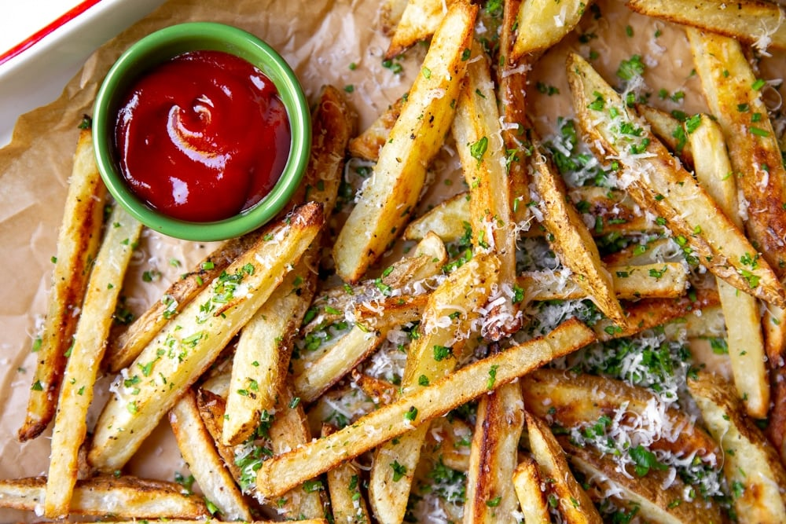

These are the ultimate fries, and they're crispy on the outside, fluffy in the center, and they get showered with parmesan and herbs.
It’s important to soak the fries in very hot tap water—this will remove some of the surface starches and start to create a skin on the fries, making them crispier on the outside. Also, be sure to dry them thoroughly before cooking (otherwise they won’t crisp up). If you want to really take the fries over the top, drizzle them with a bit of truffle oil (or sprinkle them with truffle salt) when they come out of the oven. Serve the fries on their own or with aioli, sriracha mayo or ketchup for dipping.
List of ingredients
- 1 ½ pounds Russet potatoes (2-3 potatoes)
- 2 tablespoons extra virgin olive oil, divided
- ½ teaspoon granulated garlic or garlic powder
- Salt and freshly ground black pepper
- 2 tablespoons finely chopped parsley
- 2 tablespoons finely chopped chives
- ¼ cup freshly grated parmesan cheese (optional)
Steps
- Preheat the oven to 450˚F (230˚C). Line a large baking sheet with parchment paper.
- Slice the potatoes lengthwise into ¼-inch thick planks, then cut them into ¼-inch strips (I don’t peel the potatoes, as I like the flavor and appearance of the skin, but you could peel them if you prefer). Transfer the potatoes to a large bowl and cover them with 1-2 inches of very hot tap water. Let sit 10-15 minutes. Drain the potatoes, rinse them well, then pat them very dry using kitchen towels.
- Drizzle 1 tablespoon of the olive oil over the parchment-lined baking sheet. Spread the potatoes over top, and drizzle them with the remaining 1 tablespoon of oil. Sprinkle with the granulated garlic, and season well with salt and pepper. Toss well to coat the potatoes, then spread them in a single layer (it’s okay if the potatoes are touching but they shouldn’t be overlapping—you can use 2 baking sheets if needed).
- Roast the potatoes until they're golden and crisp on the bottom, about 20 minutes. Remove the pan from the oven, and using a large spatula, flip the fries over. Spread them in an even layer, redistributing the fries as needed (moving any lesser-cooked ones to the edges where it’s hotter)—be careful, they’re hot!
- Put the pan back in the oven and continue roasting until the potatoes are golden on all sides and crisp, about 15 minutes longer. Immediately season the hot fries with more salt, and sprinkle with the parsley, chives and parmesan. Toss to coat. Serve hot.
Return to main page